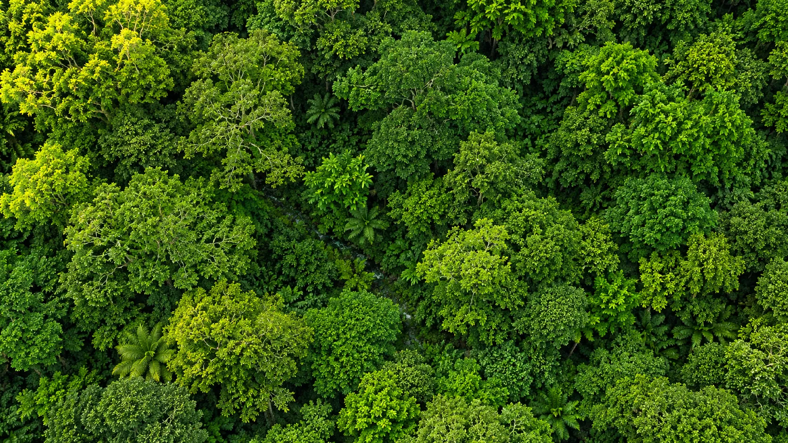
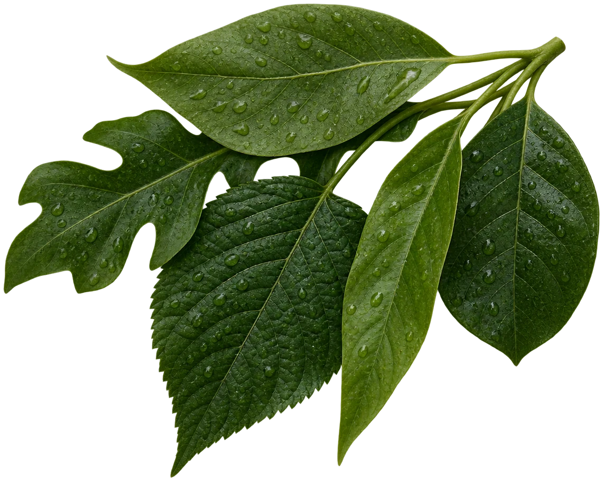
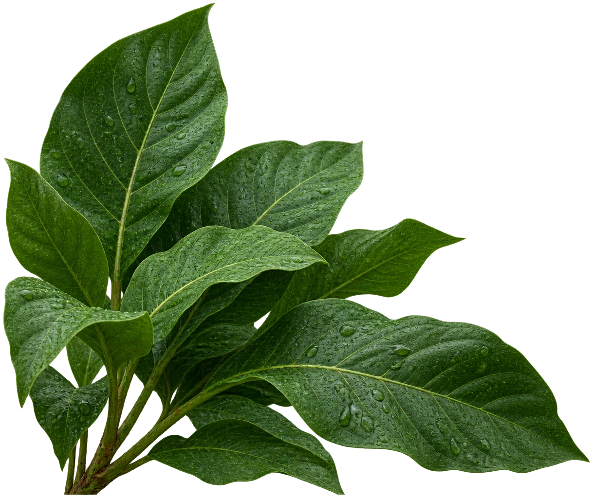
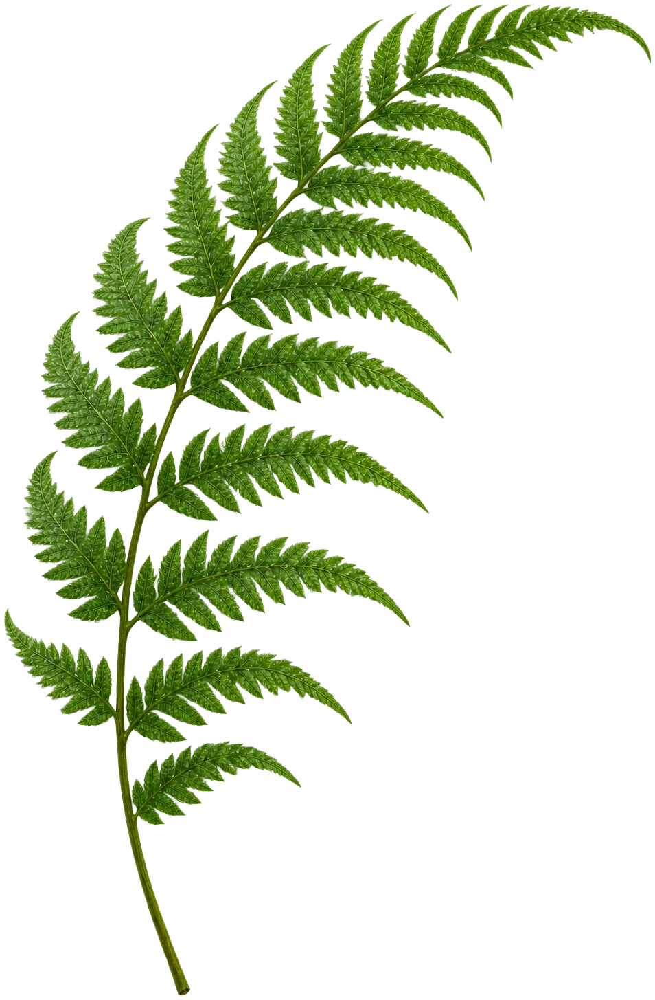
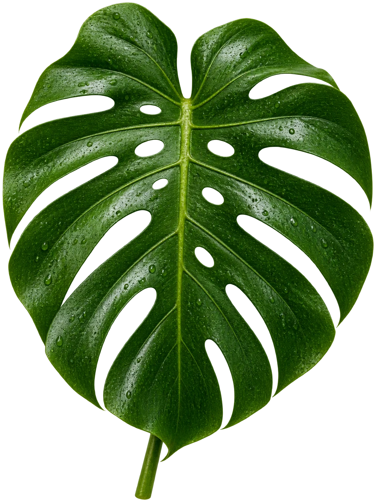
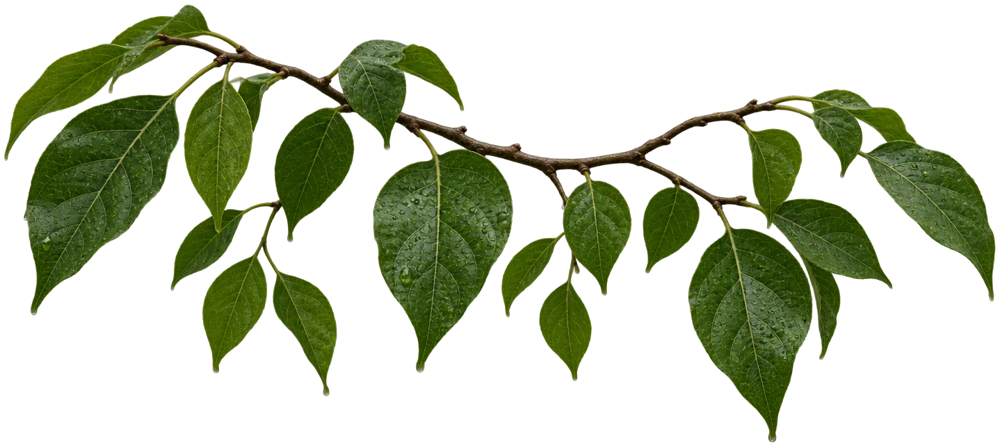

Sobre vida e floresta
Viva a natureza.
Copas que respiram
Uma floresta não é um conjunto de árvores. É um sistema em que folha, raiz e solo dependem uns dos outros. Quando uma parte falta, o resto sente.

Experiência CRIVO
Uma pequena viagem pela beleza da natureza, e pelo que perdemos quando deixamos de olhar para ela.
Sobre vida e floresta
Uma floresta não é um conjunto de árvores. É um sistema em que folha, raiz e solo dependem uns dos outros. Quando uma parte falta, o resto sente.



Enraizados na nossa natureza
Perceber a natureza é o primeiro passo para cuidar dela. O que fica invisível é o que se perde sem que ninguém note.
Não somos apenas visitantes. Somos parte deste ecossistema.


Feito pela CRIVO
A CRIVO desenvolve sistemas, sites e apps sob medida, com clareza de uso e atenção a cada detalhe da interface.
Conheça a CRIVOImagens da floresta geradas por IA. Vídeo: Pexels.